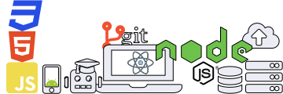

Desenvolvedor Fullstack
Programar é traduzir a solução de um problema para um computador
O Frontend traduz a solução de volta ao ser humano


Programar é traduzir a solução de um problema para um computador
O Frontend traduz a solução de volta ao ser humano